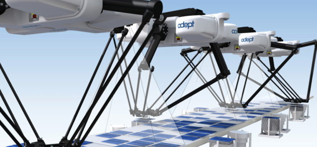

Testing AVbin 9


Mac OS X 64-bit
m4a - ok
mp3 - ok
ogg - location indicator erratic
h264 - Misses first keyframe. Segfaults if seek.
Mac OS X 32-bit
m4a - ok
mp3 - ok
ogg - location indicator erratic
h264 - Misses first keyframe. Segfaults if seek.
Linux 64-bit
m4a - ok
mp3 - ok
ogg - Doesn't play - AssertionError: Timestamp beyond dequeued source memory
h264 - Misses first keyframe. Segfaults if seek.
Linux 32-bit
m4a - ok
mp3 - ok
ogg - Doesn't play - AssertionError: Timestamp beyond dequeued source memory
h264 - Misses first keyframe. Segfaults if seek.
Windows 64-bit
m4a - Staticky throughout playback
mp3 - ok
ogg - Staticky throughout playback
h264 - Misses first keyframe. Gives the following error if seek:
WindowsError: exception: access violation reading 0x0000000000000048
Windows 32-bit
m4a - Doesn't play - WindowsError: exception: access violation reading 0xFFFFFFFF
mp3 - ok
ogg - Doesn't play - WindowsError: exception: access violation reading 0xFFFFFFFF
h264 - Doesn't play - WindowsError: exception: access violation reading 0xFFFFFFFF
Known Issues with AVbin 9